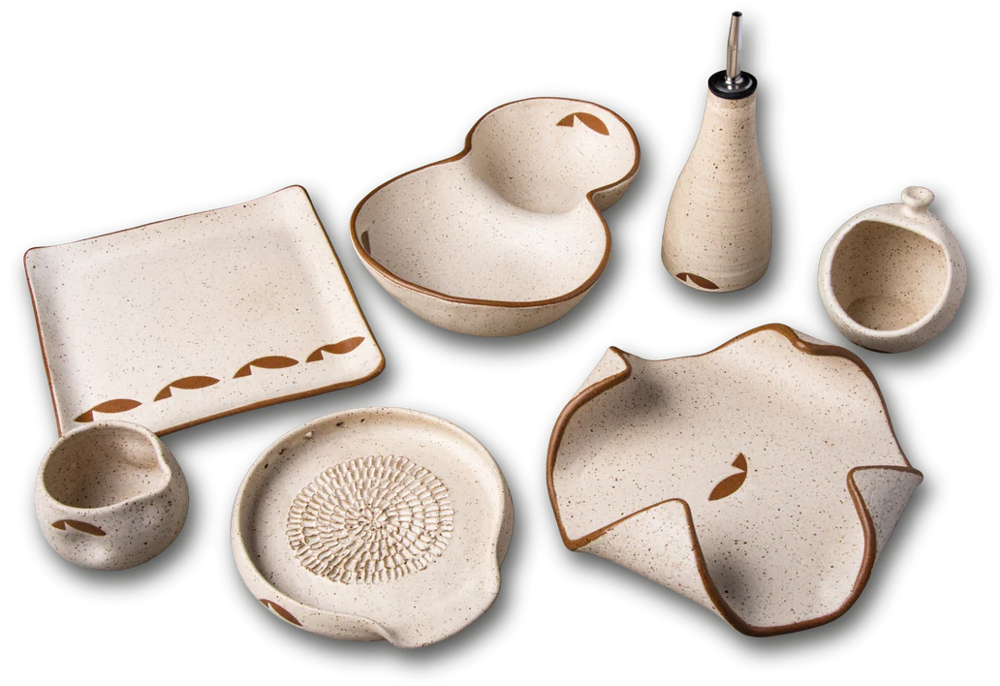
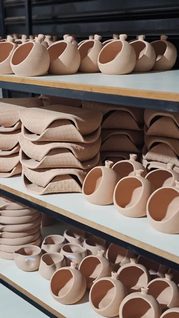
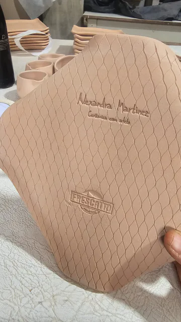
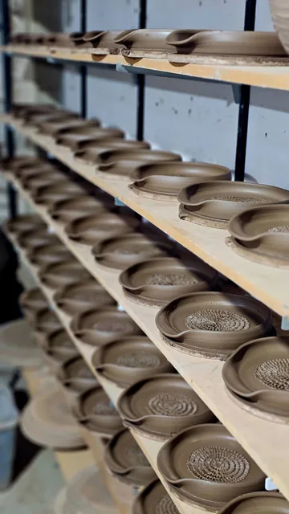
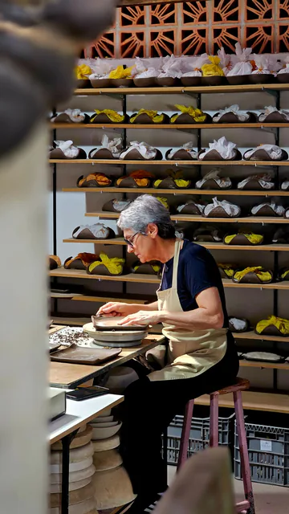
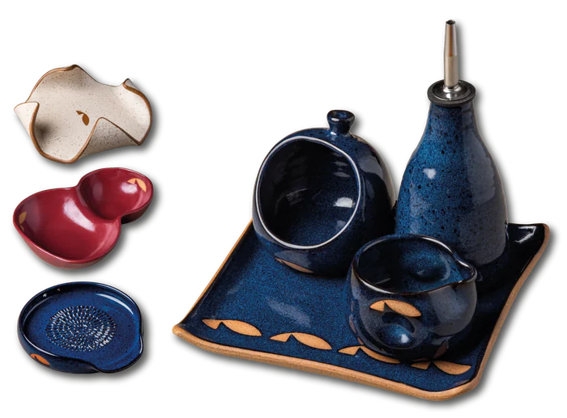
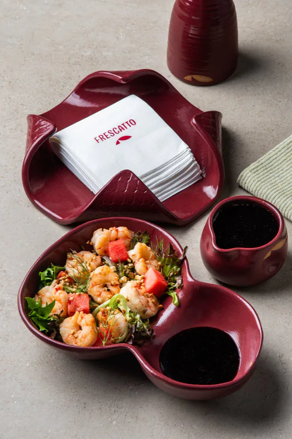
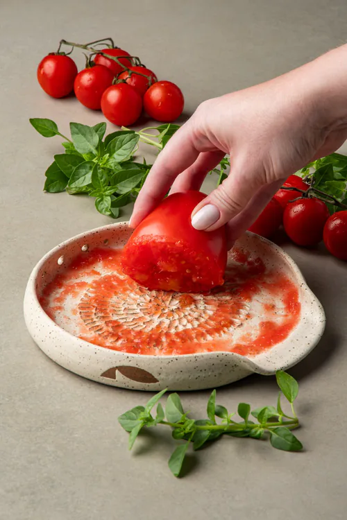
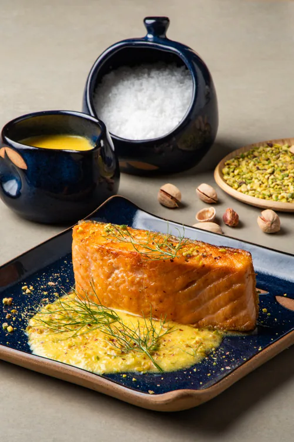
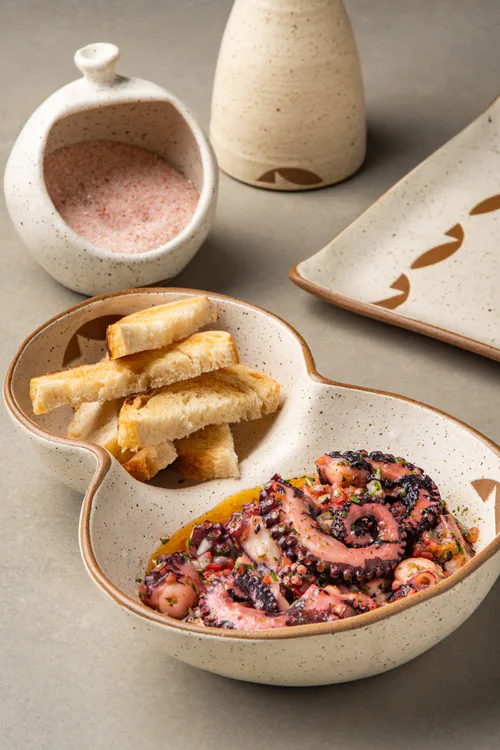

Colecionáveis Frescatto
Para surpreender e colecionar
bons momentos.

As Cerâmicas Colecionáveis
Frescatto estão de volta.
Compre em nossa Peixaria, junte fishcoins
e leve o talento de Alexandra Martinez
para sua casa.
Uma mesa perfeita tem o sabor
Frescatto e o talento
Alexandra Martinez.
Acreditamos que é na mesa que os grandes momentos da vida são eternizados em histórias, momentos e lembranças.
Para você colecionar esses encontros com muito bom gosto, convidamos a artesã Alexandra Martinez para criar uma linha exclusiva de peças para nossos clientes.
Em Ourinhos, no interior de São Paulo, Alexandra Martinez transforma terra e água em matéria-prima para criar peças artesanais únicas, feitas com muito afeto para surpreender você.




Tempo que transforma
barro em obra de arte.
Do encontro entre Frescatto e Alexandra Martinez nasce
uma coleção de 7 peças exclusivas de cerâmica em 3 cores
para quem ama surpreender e para descobrir a beleza de
colecionar bons momentos.

Como participar?
-
Compre na Peixaria Moema
A cada R$ 70,00 em compra você ganha um Fishcoin.
-
Acumule pontos
Seus pontos ficam disponíveis para você acompanhar na plataforma.
-
Resgate seus prêmios
Troque seus fishcoins pelos produtos disponíveis e receba seu prêmio.
-
Retire os brindes
Após solicitar o resgate, você poderá retirar o brinde na Peixaria Frescatto Moema.




Dúvidas frequentes
- Cadastre-se no site https://fishingfrescatto.polgo.com.br/
- Nas suas compras na Peixaria Frescatto Moema (SP), informe seu CPF no caixa no momento do pagamento
- Pronto! Suas compras passam a gerar fishcoins automaticamente
Importante: só contam para pontuação as compras feitas depois que você concluir o cadastro no site. Compras anteriores não podem ser incluídas retroativamente.
Seus fishcoins caem na sua conta em até 48 horas úteis após a compra, e não há limite máximo de quantos você pode acumular.
Os brindes dependem da disponibilidade de estoque e podem ser trocados ou descontinuados ao longo da campanha. Se o item escolhido não estiver mais disponível, a Frescatto pode oferecer um produto equivalente ou devolver seus pontos.
- Após o resgate, o brinde fica pronto para retirada em até 7 dias úteis
- A partir daí, você tem até 30 dias para buscá-lo na unidade
Se não retirar dentro desse prazo, o brinde é perdido e os fishcoins utilizados não são devolvidos.
- Cancelamento ou devolução da compra: os fishcoins referentes são cancelados automaticamente
- Troca por outro produto: seus pontos continuam válidos, recalculados com base no valor final da nova compra